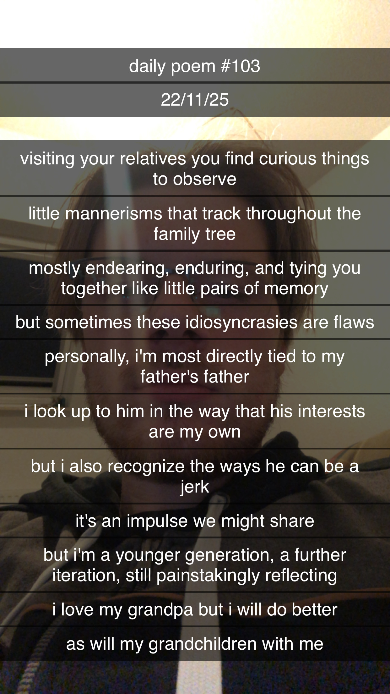

family
[103]visiting your relatives you find curious things to observe
little mannerisms that track throughout the family tree
mostly endearing, enduring and tying you together like little pairs of memory
but sometimes these idiosyncrasies are flaws
personally, i'm most directly tied to my father's father
i look up to him in the way that his interests are my own
but i also recognize the ways he can be a jerk
it's an impulse we might share
but i'm a younger generation, a further iteration, still painstakingly reflecting
i love my grandpa but i will do better
as will my grandchildren with me
